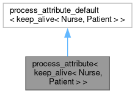

#include <attr.h>
Inheritance diagram for process_attribute< keep_alive< Nurse, Patient > >:

Collaboration diagram for process_attribute< keep_alive< Nurse, Patient > >:
Static Public Member Functions | |
| template<size_t N = Nurse, size_t P = Patient, enable_if_t< N !=0 &&P !=0, int > = 0> | |
| static void | precall (function_call &call) |
| template<size_t N = Nurse, size_t P = Patient, enable_if_t< N !=0 &&P !=0, int > = 0> | |
| static void | postcall (function_call &, handle) |
| template<size_t N = Nurse, size_t P = Patient, enable_if_t< N==0||P==0, int > = 0> | |
| static void | precall (function_call &) |
| template<size_t N = Nurse, size_t P = Patient, enable_if_t< N==0||P==0, int > = 0> | |
| static void | postcall (function_call &call, handle ret) |
 Static Public Member Functions inherited from process_attribute_default< keep_alive< Nurse, Patient > > Static Public Member Functions inherited from process_attribute_default< keep_alive< Nurse, Patient > > | |
| static void | init (const keep_alive< Nurse, Patient > &, function_record *) |
| Default implementation: do nothing. | |
| static void | init (const keep_alive< Nurse, Patient > &, type_record *) |
| static void | precall (function_call &) |
| static void | postcall (function_call &, handle) |
Detailed Description
template<size_t Nurse, size_t Patient>
struct process_attribute< keep_alive< Nurse, Patient > >
struct process_attribute< keep_alive< Nurse, Patient > >
Process a keep_alive call policy – invokes keep_alive_impl during the pre-call handler if both Nurse, Patient != 0 and use the post-call handler otherwise
The documentation for this struct was generated from the following file:
- unitree_legged_sdk/python_wrapper/third-party/pybind11/include/pybind11/attr.h